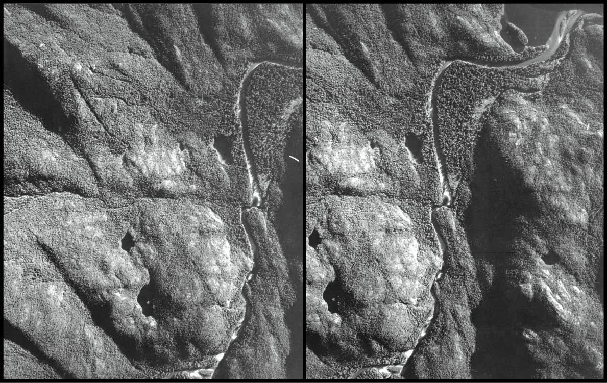
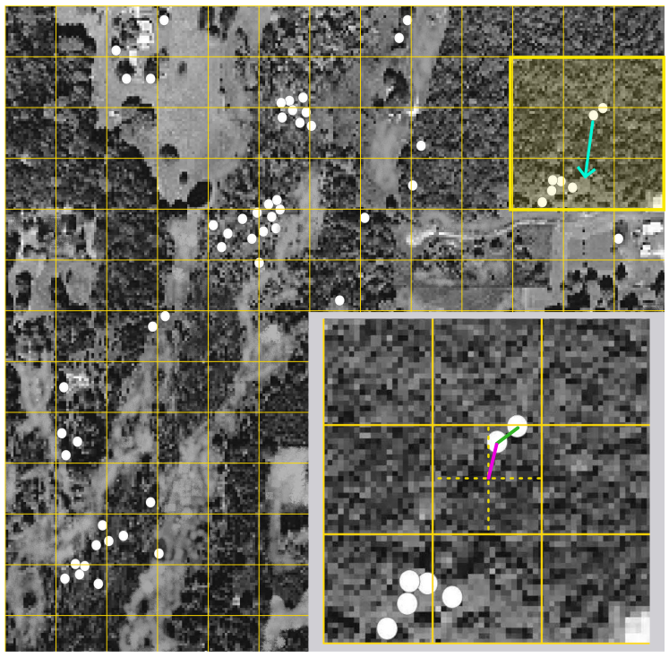
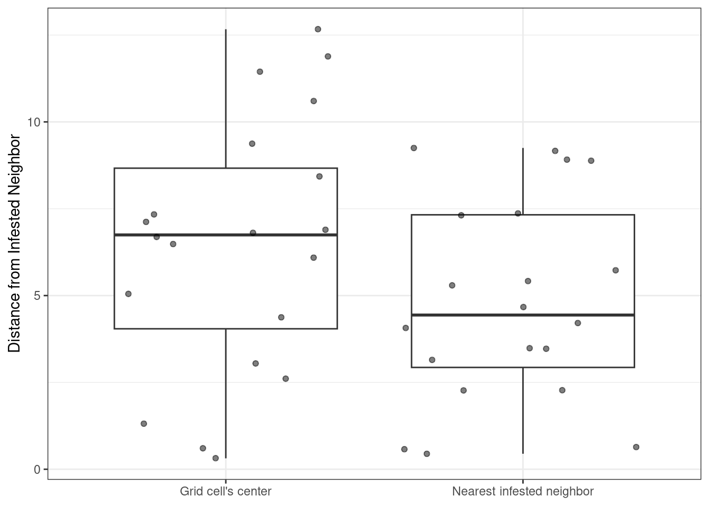

GEM500: Historical data and landscape disturbances
Author
Tommaso Trotto & Jen Baron (tommaso.trotto@ubc.ca)
Published
August 31, 2024
Exploring historical data
Landscape ecology investigates the patterns and processes that shape ecosystems. Ecosystem processes are dependent on temporal scale and linked through cross-scale interactions. To circumvent the problem of temporal scale, ecologists frequently use historical datasets to understand (Tomscha et al. (2016)): - Ecosystem structure and composition in different successional stages - Ecosystem dynamics over time - Legacy effects from management or disturbance that influence landscape pattern
Historical data provide key opportunities to understand landscape dynamics (Vellend et al. (2013)). However, these datasets can often be hard to find or poorly documented. Learning how to find, use, and interpret historical data is an important skill in landscape ecology. One of the most common historical data sources you will encounter are aerial imagery. Since the 1930’s, airplanes have been equipped with cameras to capture snapshots of the landscape. To date, the aerial imagery archive makes it the longest available and spatially-continuous record of landscape changes we have (Gergel and Turner (2017)). These imagery are captured at very high spatial resolutions given the low flight altitude (~2000m), thus providing lots of details on landscape dynamics and historical baseline conditions for an evolving landscape. In Canada, aerial imagery acquisition is carried out by each province every 10-15 years on average. The imagery are periodically interpreted to extract valuable information on, for example, land cover, disturbances, and harvesting operations, which then populate the forest inventories we use for our analyses.
Aerial imagery can be obtained from data portals made available by each Canadian province. For example, you can use the BC Data Catalog or Environment Canada Catalog to request or download aerial imagery for a specific area. For example, take a look at Figure 1 which shows a stereopair, that is a collection of 2 highly-overlapping imagery collected within a very short time frame which can be used in a stereoscope to create an “illusion of depth” and perceive a 3D relief.

Figure 1: Illustration of a stereopair.
Note, however, how the stereopair really lacks of any explicit information on the landscape we can actually use. We observe relief, vegetation, and a stream, but we can’t directly use them in an analysis stream. We need to somehow report that observation. Therefore, to make these imagery more useful, we need to interpret them. Take a look at the historical and modern imagery pair in Figure 2. We clearly see that in the modern imagery on the right there is a new road north to the river, and that the river’s delta has also changed. While we can observe that, we need a concrete piece of information we can use to conduct any sort of analysis. That’s when imagery interpretation (i.e. photointerpretation) comes into play. Trained professionals look for unique and homogeneous characteristics in the imagery that make up a particular feature of interest. For example, say we are interested in seeing how the forest cover per tree species has changed over time. Therefore, we need a series of layers that clearly tell us where the trees are, where they are not, and what species they are. To do that, we traditionally draw polygons around features of interest. Figure 3 shows an interpretation scheme for each imagery. This information now is very useful because it is georeferenced and can be used to populate forest inventories or conduct our analysis on forest cover changes over time per species - if we had an identical classification scheme for both imagery.
Figure 2: Historical (left) and modern (right) aerial imagery.
Figure 3: Photointerpreted aerial imagery.
Question 1: In simple words, describe the value of historical imagery in answering ecological questions at the stand- and landscape-level. Use 2 bullet points for each of stand and landscape.
Question 2: In simple words, describe the drawback of historical imagery in answering ecological questions at the stand- and landscape-level. Use 2 bullet points for each of stand and landscape.
Landscape disturbance
One other very common use-case or aerial imagery that you will likely encounter is disturbance mapping and tracking. Using aerial imagery, we can gather high spatial resolution information on the landscape affected by disturbances, as well as their location and evolution over time as imagery are interpreted. To start getting your hands dirty with historical data, for this lab we are going to work with aerial imagery and disturbance data to explore the relationship between fall webworm outbreaks (Hyphantria cunea), a generalist lepidopteran herbivore, and landscape structure or, more simply put in our case, the spatial arrangement of forest patches. This dataset (Gergel and Turner (2017)) is a simple and straightforward example of how aerial imagery can be used to answer questions on the effect of disturbances on the landscape.
For this lab, we are going to work with: - An historical imagery of central Oklahoma in 1996 - A presence/absence dataset of infestation spots due to fall webform during a severe outbreak
We are interested in understanding the relationship between the location of the infestations and the structure of the landscape. In particular, we want to see if fall webworms preferentially select forest edges to feed on as opposed to randomly dispersed hosts across the landscape. Why is this important? Because, for example, by knowing that fall webworms prefer to feed along forest edges, we can try reducing the level of landscape fragmentation to some degree to reduce the severity of the infestation. To begin with, let’s have a look at the aerial imagery and the disturbance data (Figure 4).
Figure 4: Webworm infestation location in central Oklahoma.
We can already see clusters of infestation on the left-hand side of the imagery along the forest edges. However, let’s explore this hypothesis in a more rigorous way. One easy way to accept or reject our hypothesis that webworm preferentially feed on forest edges, we can use a t-test to compare the distance of infested tree to the closest forest edges. To do that, we need to first find the forest edges. Unfortunately, we don’t have access to a digital copy of the imagery, nor we have information on the scale. Therefore, we have to rely on actual pen and paper to measure unit-less distances from an infestation spot to the closes forest edge. Thankfully, that is already provided to you in the data directory. Look for webworms.xlsx and import it into your environment to explore it. In addition, we also have to measure the distance from an infested tree to a random spot on the landscape. Why? To have a term of comparison. Comparing distances to forest edges and to a random point will give us a sense of the webworm feeding spot preference. Let’s see how to do it.
For now, don’t worry about the last column of the dataframe, we’ll deal with that later. Now, follow the steps below to learn how we populated the fall webworm dataframe you saw earlier:
Build a reference grid on the imagery (used to make XY pairs)
Randomly sample a grid cell using any random number generator routine (e.g. sample)
Measure distance from the center of a grid cell to the nearest infested tree (d_infested tree)
Measure distance from the infested spot within the grid cell, if any, and the closest forest edge (d_infested_tree_forest_edge)
Measure distance to closest infested neighbor (d_nearest_infested_neighbor)
These steps are illustrated in Figure 5. We createad a grid to measure the distance from an infested tree to the “random point” we mentioed earlier. We use a grid to have a rigourous and reproducible layout. Note that when working with random numbers, you may want to set.seed for reproducibility. That is, by setting a seed you make (pseudo)-random numbers predictable and therefore you make sure that every time you run the instruction you’ll obtain the same result.

Figure 5: Illustration of the steps conducted to determine distance from infested trees to closest forest edge. The yellow square is a zoomed in view of the selected grid cell. The light blue arrow is the distance from the infested tree and the nearest forest edge. The green line is the distance from an infested tree to the nearest neighbor, while the pink line is the distance to a random point (the grid cell’s center in our case).
Now, do webworms preferentially choose forest edge trees? Let’s plot the data and have a look (Figure 6)!
Code
worms_long <- worms %>%select(-d_nearest_infested_neighbour) %>%# remove columns we are not interested inpivot_longer(cols=starts_with("d"), names_to="condition", values_to="distance") ggplot(data = worms_long, aes(x=condition, y = distance)) +geom_boxplot(outlier.shape =NA) +geom_jitter(alpha=0.5) +scale_x_discrete(labels =c("Grid cell's center", "Forest Edge")) +ylab(label ="Distance from Infested Tree") +theme_bw() +theme(axis.title.x =element_blank())
Figure 6: Boxplot illustration of infested trees to the distance distribution of (left) grid cell’s center and (right) the nearest forest edge.
Hypothesis testing
It’s time to really test if our hypothesis is true from a statistical perspective. The most basic approach we can take is using a t-test. How does it work? The t-test compares the mean of 2 distributions and if these are significantly different then they are indeed different! Explore the code below to see how to run a t-test in R.
Code
t.test(worms$d_infested_tree, worms$d_infested_tree_forest_edge, equal.var = F) # assume the variance is not identical for the 2 distributions
Welch Two Sample t-test
data: worms$d_infested_tree and worms$d_infested_tree_forest_edge
t = 3.3436, df = 27.077, p-value = 0.00243
alternative hypothesis: true difference in means is not equal to 0
95 percent confidence interval:
1.171455 4.891715
sample estimates:
mean of x mean of y
6.455904 3.424319
Question 3: Knowing that fall webworms preferentially feed on forest edges, use 2 bullet points to discuss how changes in landscape structure, for example fragmentation, may exacerbate the severity of future infestations.
Effect of webworm infestations on landscape structure
Great! Now that we figured that webworms do indeed prefer forest edges (p-value of t-test < 0.05), remember our initial observation that most of the infested trees seemed to be clumped together (Figure 7)? What if webworms actually tend to mingle together instead of randomly distribute across the landscape? Again, we can explore this hypothesis in a rigorous way using the aerial imagery we have. How do we go about this? Simply, we could use the distance between 2 neighboring infested trees and use an index to tell us if neighboring infested trees are close enough to be considered “clumped” or not (column d_infested_nearest_neighbor in the worms dataframe). One option is to use the T-square index of spatial pattern, \(C\) for short, that will give us a sense of whether our trees are grouped together in a clump or not (Ludwig and Reynolds (1988)).
Code
worms_long <- worms %>%select(-d_infested_tree_forest_edge) %>%# remove columns we are not interested inpivot_longer(cols=starts_with("d"), names_to="condition", values_to="distance") ggplot(data = worms_long, aes(x=condition, y = distance)) +geom_boxplot(outlier.shape =NA) +geom_jitter(alpha=0.5) +scale_x_discrete(labels =c("Grid cell's center", "Nearest infested neighbor")) +ylab(label ="Distance from Infested Neighbor") +theme_bw() +theme(axis.title.x =element_blank())

Figure 7: Boxplot illustration of infested trees to the distance distribution of (left) grid cell’s center and (right) the nearest infested tree neighbor.
Let’s quickly explore how \(C\) is calculated (Equation 1):
\[ C = \sum[x_i^2/ (x_i^2 + 0.5y_i^2)] / n \tag{1}\]
Where \(x_i\) is the distance from the random point we set at the beginning to the nearest infested tree, \(y_i\) is the distance to the nearest infested neighbor, and \(n\) is the total number of samples (20). \(C\) is approximately 0.5 for random patterns, significantly less than 0.5 for uniform patterns, and significantly greater than 0.5 for clumped patterns. However, how do we determine if the value we get is significantly less or greater than 0.5? We can use a variant of the t-test, the z-test. If \(z\) (Equation 2) is greater than or equal to 1.96, then \(C\) is significantly different from 0.5, or in other words, the webworm-infested trees are non-randomly distributed on the landscape. Based on the results we obtained, we can conclude that fall webworms tend to clump together instead of randomly disperse across the landscape.
Question 4: Webworm outbreaks may cause widespread damage to trees and mast crops (fruits and nuts). White-tailed deer (Oidocoileus virginianus) populations in central Oklahoma depend heavily on mast production for winter forage. Using bullet points, describe how webworm infestations may influence deer survival over time in face of severe future infestations.
Conclusions
In this lab we briefly explored the use of aerial imagery for environmental monitoring with an example on their applications to study fall webworms. However, while aerial imagery give us incredible views into the past, and are still widely used today for data and method validation, care must be taken during photointerpretation, as class attribution can be prone to errors. Therefore, always make sure you are aware of the errors associated with the data type and source you work with.
References
Gergel, Sarah E, and Monica G Turner. 2017. Learning Landscape Ecology: A Practical Guide to Concepts and Techniques. Springer.
Ludwig, John A, and James F Reynolds. 1988. Statistical Ecology: A Primer in Methods and Computing. Vol. 1. John Wiley & Sons.
Tomscha, Stephanie A., Ira J. Sutherland, Delphine Renard, Sarah E. Gergel, Jeanine M. Rhemtulla, Elena M. Bennett, Lori D. Daniels, Ian M. S. Eddy, and Emily E. Clark. 2016. “A Guide to Historical Data Sets for Reconstructing Ecosystem Service Change over Time.”BioScience 66 (9): 747–62. https://doi.org/10.1093/biosci/biw086.
Vellend, Mark, Carissa D Brown, Heather M Kharouba, Jenny L McCune, and Isla H Myers-Smith. 2013. “Historical Ecology: Using Unconventional Data Sources to Test for Effects of Global Environmental Change.”American Journal of Botany 100 (7): 1294–1305.